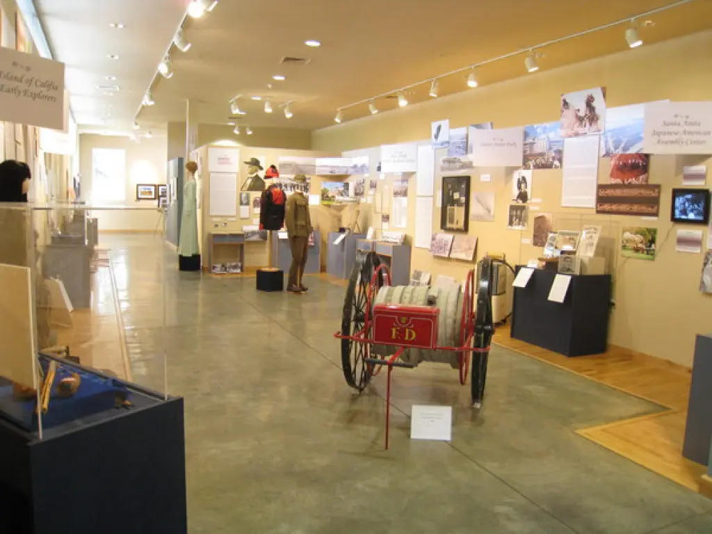
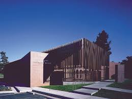
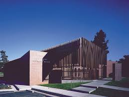

Yifan Yu
Yifan Yu is a History and Public Policy student at the University of California, Riverside.
Enter bio here
Enter bio here
Teen Intern
Developer
• Worked as the sole translator, translating around 15+ existing permanent exhibits into Mandarin Chinese.
• Preserved and digitized different forms of artifacts such as paper, metal, and photograph-based materials from the museum collections.
• Coordinated teen volunteers for community events such as preparing necessary materials and hosting reception stations.
Secretary
• Counseled 20+ students for high school and college pathway planning. Coordinated and researched with different institutions and organizations for customized course lists for each student.
• Intermediate with parents, students, and school to reach each student's individual academic needs and goals.
Presdient
• Conducted site visits and personnel interviews with local social agencies for evaluation of demand for supplies for various health issues.
• Liaised with different humanitarian organizations for donations during the COVID-19 pandemic, and successfully donated over 10,000 masks and other medical supplies
• Interviewed prominent local figures to share perspectives on effects of global health issues on a local level.
Education
UC Riverside
Portfolio



